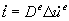
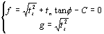

Fault frictional behavior
The interface of a fault is governed by a
frictional behavior. This behavior can be modeled with the Coulomb friction
model, which has a close resemblance with the Mohr-Coulomb plasticity model for
continuum elements. The assumption of the decomposition of the total relative
displacement rate
which results in the traction rate vector 
In GEOMEC the elastic fault stiffness
The basic unknown is the irreversible
relative displacement rate  , which is determined following
the flow theory of plasticity. The Coulomb friction model is basically given by
the yield surface and the plastic potential surface
, which is determined following
the flow theory of plasticity. The Coulomb friction model is basically given by
the yield surface and the plastic potential surface

with C the fault cohesion material parameter and
See Linear for background theory of linear elastic material models.
See Nonlinear for
background theory of general plasticity models.